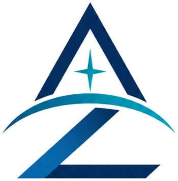

Resolver e compartilhar
Criar soluções, organizar informação, desenvolver ferramentas, orientar projetos e colaborar em problemas onde saúde e tecnologia se encontram.

AZLO Conversar sobre uma ideiaAZLO · marca-mãe em construção
Saúde, tecnologia, educação e ciência fazem parte da mesma curiosidade: entender problemas, organizar conhecimento e construir soluções úteis.
Hoje: soluções, informação, assessoria e consultoria. Amanhã: o que o trabalho real justificar.
O que é — e o que ainda não é
AZLO é a marca-mãe de um projeto de longo prazo. Ainda não é uma holding, não é uma clínica e não representa quatro empresas em operação.
É um nome para organizar competências, interesses e projetos que já se cruzam: saúde, produção de conhecimento, ensino e desenvolvimento de pequenas soluções tecnológicas. Cada frente só ganha forma pública quando houver trabalho real por trás.
Criar soluções, organizar informação, desenvolver ferramentas, orientar projetos e colaborar em problemas onde saúde e tecnologia se encontram.
Produtos, educação, produção científica e, quando houver formação e estrutura adequadas, possibilidades de atuação profissional em saúde.
Frentes de construção
Os nomes organizam o horizonte. Não são uma promessa de escala; são um compromisso de só publicar aquilo que tiver substância.
Soluções, informação e organização de projetos em saúde, sem oferta atual de atendimento clínico.
em construçãoPequenos softwares, automações, IA aplicada e ferramentas criadas para resolver problemas concretos.
em práticaEnsino, videoaulas e materiais bem arquitetados quando houver um produto educacional claro.
em formaçãoPesquisa, escrita científica e divulgação com fontes rastreáveis e distinção entre fato e interpretação.
em formaçãoMétodo compartilhado
A unidade da AZLO não está em fazer tudo ao mesmo tempo, mas em abordar campos diferentes com a mesma disciplina.
Definir o problema e separar contexto de suposição.
Organizar conhecimento, restrições e critérios de decisão.
Transformar a ideia em material, ferramenta ou solução testável.
Observar o uso real, corrigir e só então ampliar.
Princípios
Não apresentar intenção como operação nem protótipo como produto.
Separar fato, inferência, experiência e hipótese.
Usar IA e software para reduzir atrito, não para produzir espetáculo.
Organizar complexidade de um jeito que aumente autonomia.
Contato
Conte o contexto. Se houver encaixe com o que a AZLO consegue construir hoje, a conversa começa por aí.
A AZLO está em construção e atualmente não oferece diagnóstico, tratamento ou atendimento médico. Conteúdos de saúde têm caráter informativo e não substituem avaliação individual por profissional habilitado.